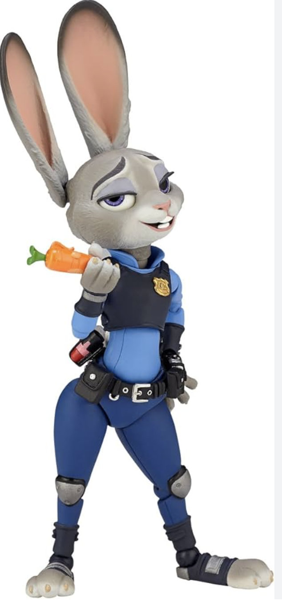

Judy Hopps is the female protagonist in Disney's animated film Zootopia, released in 2016. She is a rabbit by species and is determined to break stereotypes about rabbits being weak. From a young age, Judy aspired to become a great police officer. Despite facing skepticism and prejudice, Judy's relentless determination leads her to become the first rabbit police officer in the animal police force. Challenged by her superiors and societal expectations, Judy embarks on her first major case: solving a mass disappearance within 48 hours. Despite the odds, Judy teams up with Nick Wilde, a fox con artist, who reluctantly aids her in uncovering a conspiracy behind the case. With her remarkable courage and perseverance, Judy ultimately apprehends the mastermind, earning respect and admiration from her peers. Through her journey, Judy proves herself as a capable and dedicated officer, ultimately earning a partnership with Nick Wilde.